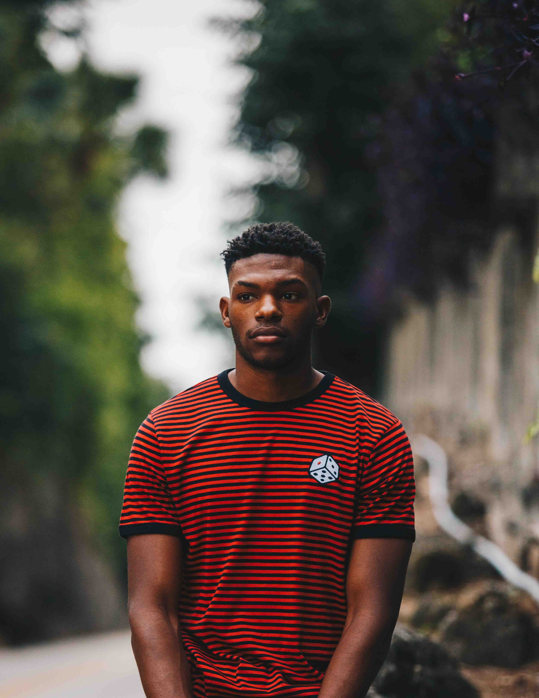

Uno de los logros más significativos de los Arhuacos en los últimos años es la recuperación de una territorio con acceso al mar, ubicado a unas dos horas de Santa Marta por la carretera que conduce a Rioacha. Se trata de una franja de tierra que se extiende desde el río Don Diego hasta el río Palomino, unos cinco kilómetros de playa entregados por el Estado a esta comunidad indígena y donde se desarrolla un proceso comunitario de gran importancia para la cultura Arhuaca, hecho que no se registraba desde hace más de 500 años cuando huyeron hacia la parte alta de la Sierra tras la conquista española. Este logro hace parte de un proceso de recuperación de los territorios de la Sierra Nevada por parte de las comunidades pertenecientes a los cuatro grupos étnicos que la habitan, y que inició hace unos 30 años.
100 voluntarios de distintas empresas sumaran sus manos a las de los Arhuacos y campesinos para poner la primera piedra de un gran proyecto comunitario.
Katanzama, como se llama este territorio, será el lugar donde se realizará el encuentro de Voluntarios de Vamos Magdalena con la comunidad Arhuaca. Se trata de un centro de intercambio de saberes y de culturas, un espacio para la realización de reuniones y asambleas de la comunidad Arhuaca. En la actualidad existe una escuela donde estudian algunos niños de la comunidad quienes conviven con Mamo Camilo y su familia en un pequeño conjunto de casas Arhuacas al lado de la playa.
Es un lugar protegido por un espeso follaje a donde se accede por un camino junto a la desembocadura del río Don Diego, y que representa la semilla de un gran proyecto educativo: el Centro del Pensamiento Arhuaco. Una vez establecidos en esta zona, la comunidad decidió que Katanzama será el centro de formación de los futuros Mamos y el lugar de encuentro con las demás culturas que hoy visitan a los indígenas de la Sierra Nevada de Santa Marta desde todos los rincones del mundo.
Los Mamos son entrenados desde niños para cumplir con importantes tareas de comunicación con su mundo místico creando armonía y balance para el mundo. El Mamo enseña que todo lo que obtenemos de la tierra debe ser devuelto a ella: “El equilibrio se consigue realizando ofrendas a los lugares sagrados para devolver a la tierra lo que se ha obtenido de ella.”
Los voluntarios de Vamos Colombia serán nuevamente protagonistas de la historia de un país que se encuentra para reconocerse, confiar y construir conjuntamente. Esta vez, para poner la primera piedra del Centro del Pensamiento, mejorar algunas de las condiciones de la escuela, conocer su cultura y trabajar con los Arhuacos y los campesinos de la región en sus afamados cultivos de cacao, en la reforestación y el compostaje.